01
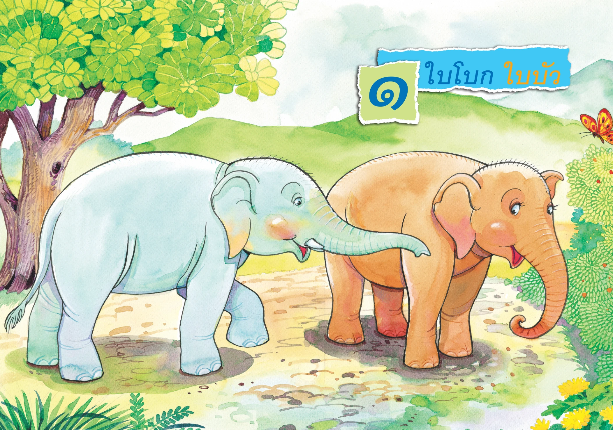
พร้อมใช้งาน
ใบโบก ใบบัว
ปูพื้นพยัญชนะไทย บัตรคำ ฟังเรื่อง จับคู่คำกับภาพ และเกมตรวจความเข้าใจ
ก่อนเรียนพยัญชนะไทย
แผนที่ 1รู้จักคำ นำเรื่อง
เพลินภาษา ป.1
กำลังตรวจสอบไฟล์สำหรับการเรียน...
0%ครบทุกหน้าของหน่วยที่ 1–12 ตั้งแต่หน้าปก รู้จักคำ บทอ่าน และแบบฝึกภาษา จนถึงอ่านคล่อง ร้องเล่น พร้อมบทอ่านคาราโอเกะ ทบทวน และเกมสะสมดาว
 หน่วยที่ 2
หน่วยที่ 2ครบทุกหน้าตั้งแต่ปกถึงอ่านคล่อง ร้องเล่น
พร้อมภาพต้นฉบับและบทอ่านคาราโอเกะ

ปูพื้นพยัญชนะไทย บัตรคำ ฟังเรื่อง จับคู่คำกับภาพ และเกมตรวจความเข้าใจ
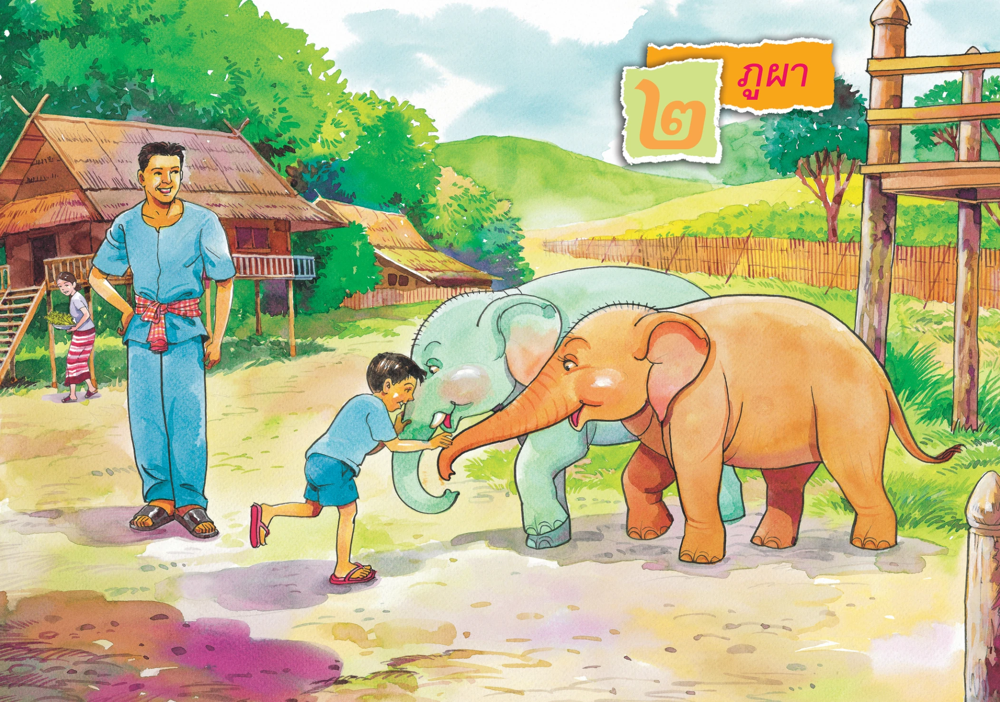
รู้จักคำ นำเรื่อง ผ่านเพลง เกมทายภาพ บิงโก และขบวนรถไฟประโยค
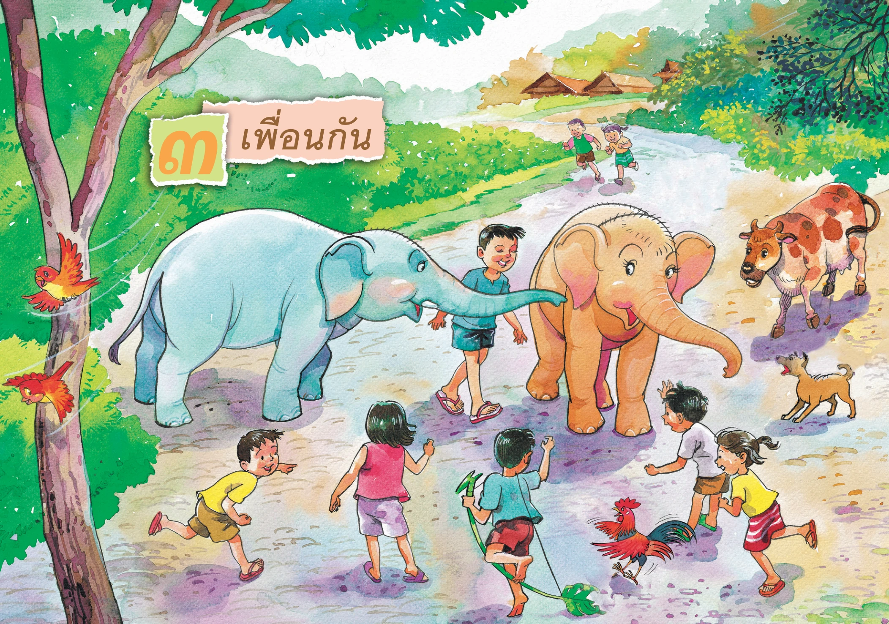
คำจากบท: ไก่ ลูกช้าง ชู จ้อง ร้อง เรียก เพื่อน เด็ก และฝึกสระ เอ–แอ
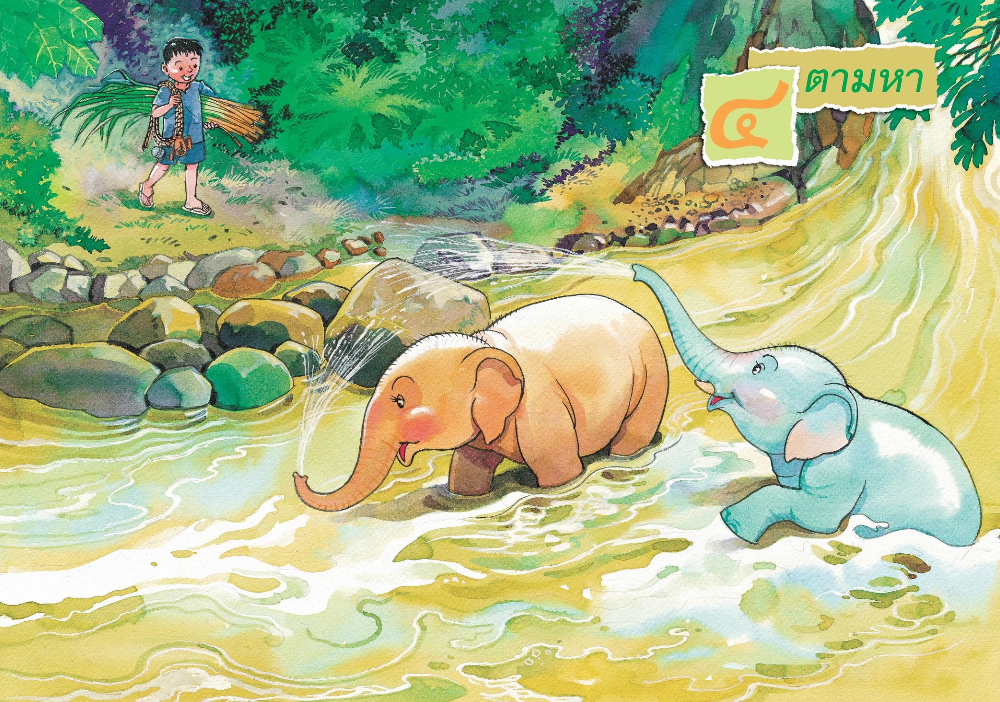
คำจากบท: คอ ผูก ลาน อ้อย เล่นน้ำ ลำธาร กระดิ่ง กระพรวน และฝึกสระ โอ–ไอ–ใอ
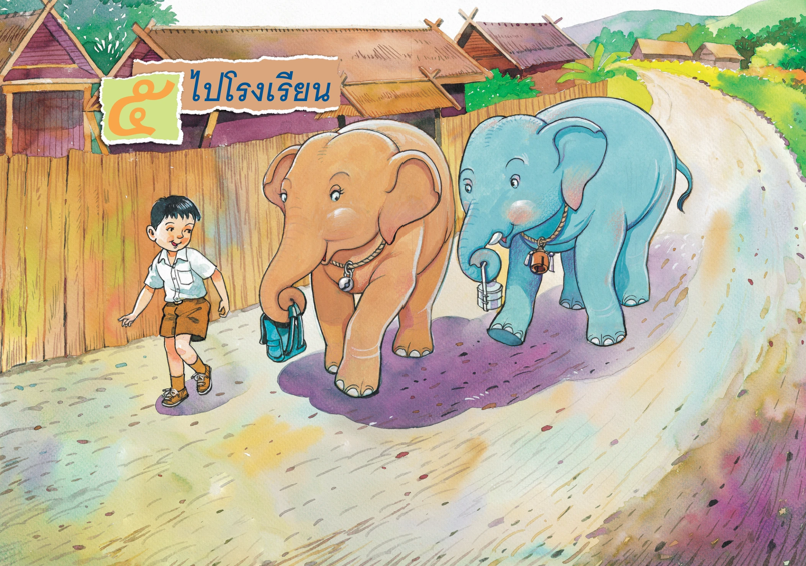
คำจากบท: เข้า หิ้ว เรียน ปิ่นโต กระเป๋า โรงเรียน หนังสือ โบกมือ และฝึกสระ อือ
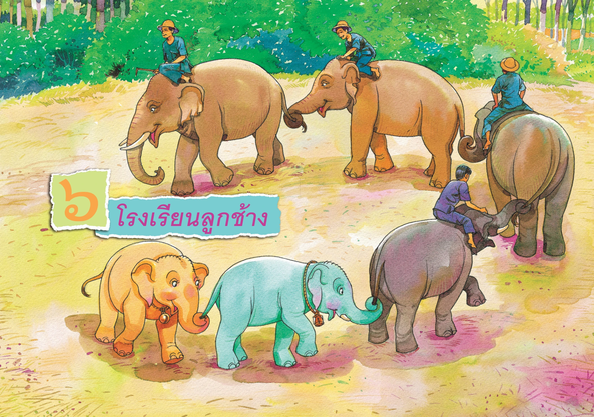
คำจากบท: แถว เชือก กล้วย หมู่บ้าน ควาญช้าง วงกลม และฝึกสระ เอีย–อัว
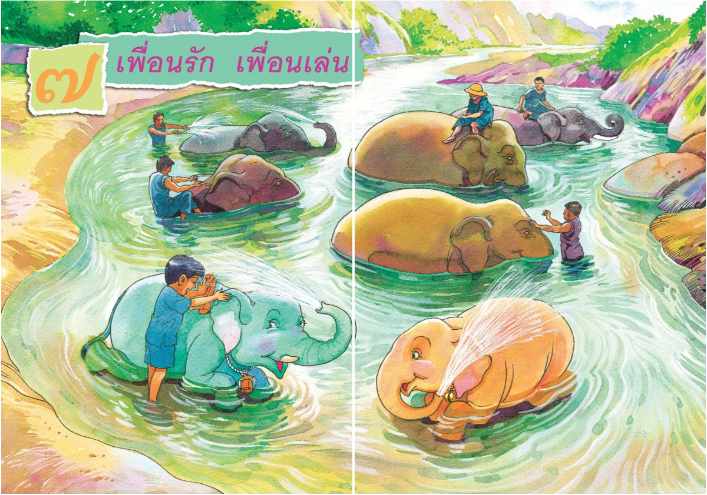
รู้จักคำ ฝึกอ่านคาราโอเกะ อ่านคล่องร้องเล่น และเกมทบทวน
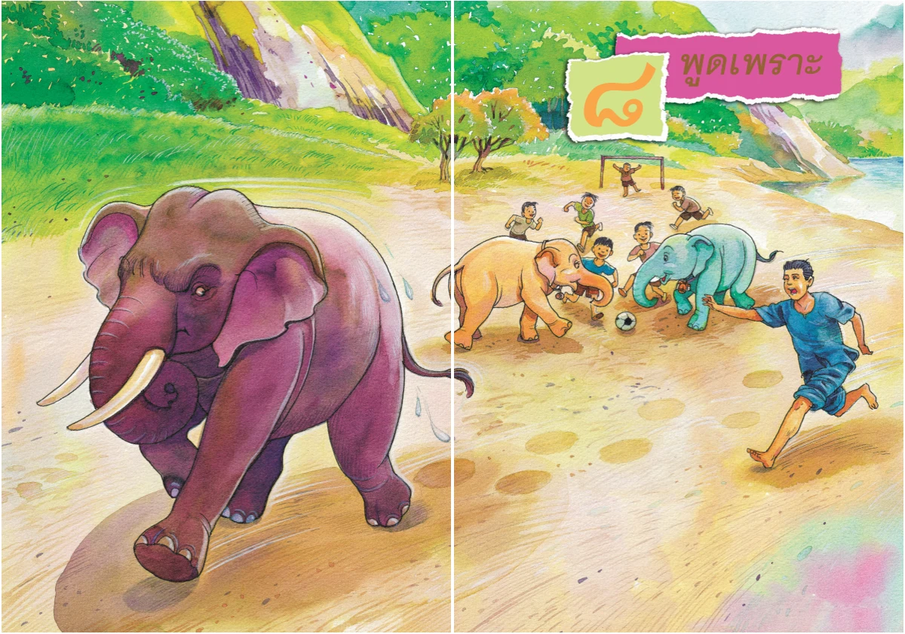
รู้จักคำ ฝึกอ่านคาราโอเกะ อ่านคล่องร้องเล่น และเกมทบทวน
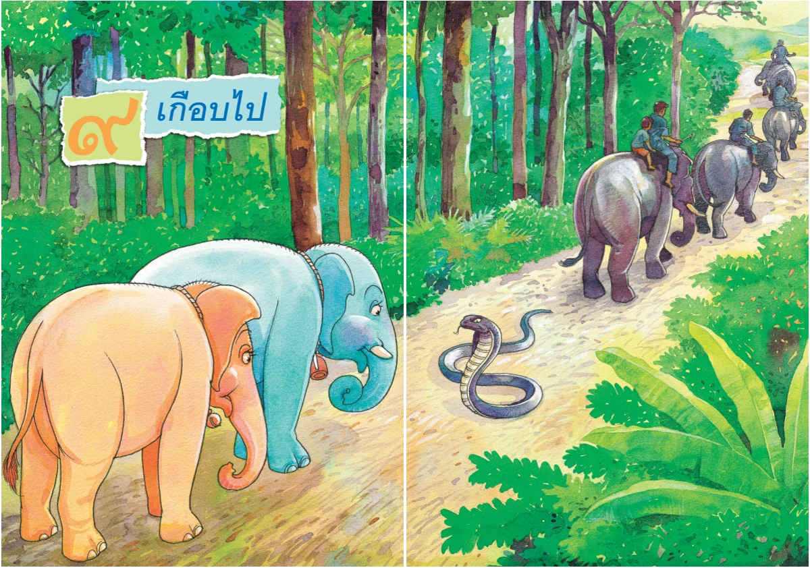
รู้จักคำ ฝึกอ่านคาราโอเกะ อ่านคล่องร้องเล่น และเกมทบทวน
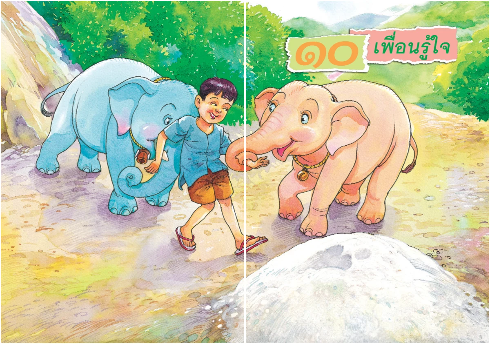
รู้จักคำ ฝึกอ่านคาราโอเกะ อ่านคล่องร้องเล่น และเกมทบทวน
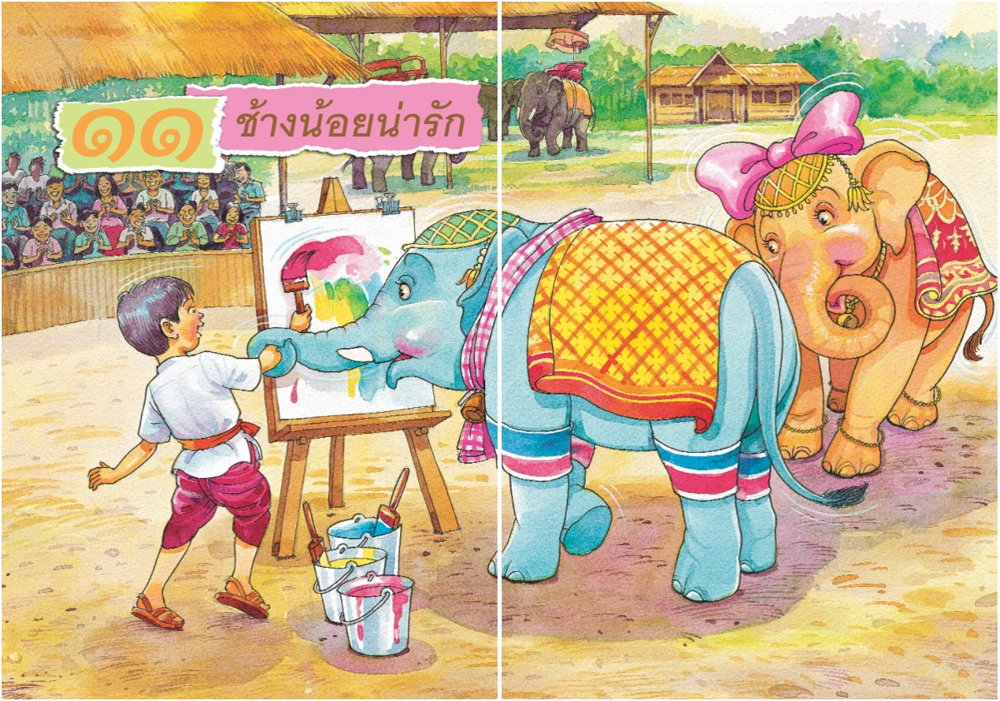
รู้จักคำ ฝึกอ่านคาราโอเกะ อ่านคล่องร้องเล่น และเกมทบทวน
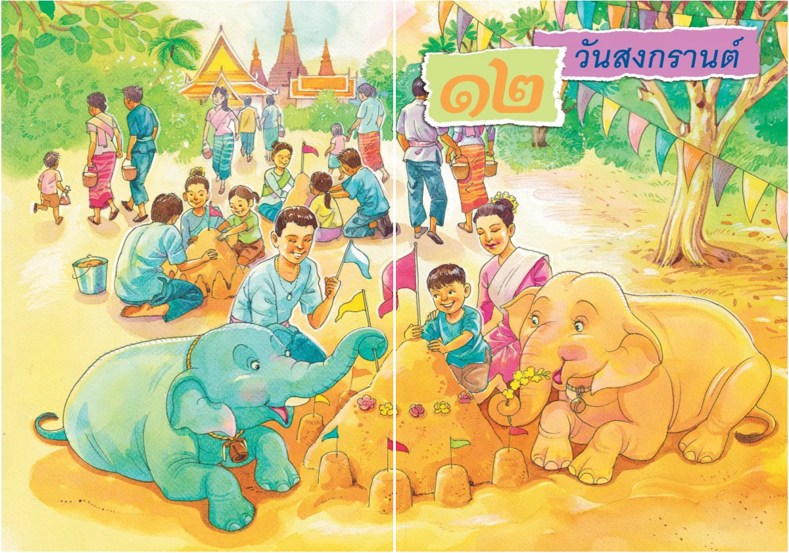
รู้จักคำ ฝึกอ่านคาราโอเกะ อ่านคล่องร้องเล่น และเกมทบทวน